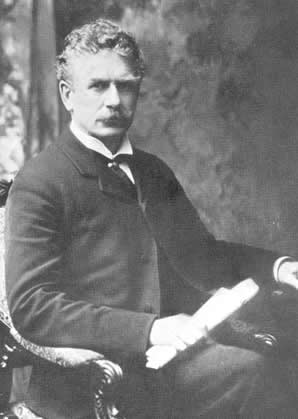

Tuesday, October the 26th, 2010
back to: title, date or indexes

One has to ask : did Ambrose Bierce grow up on Scroonhoonpooge Farmyard, or an eerily exact replica of it? “The Old Oaken Bucket”—published in The Wasp, 3rd November 1883—begins thus:
With what anguish of mind I remember my childhood Recalled in the light of knowledge since gained, The malarious farm, the wet, fungus-grown wildwood, The chills then contracted that since have remained; The scum-covered duck pond, the pigsty close by it, The ditch where the sour-smelling house drainage fell, The damp, shaded dwelling, the foul barnyard nigh it—But worse than all else was that terrible well, And the old oaken bucket, the mould-crusted bucket, That moss-covered bucket that hung in the well.
Hooting Yard on the Air, October the 28th, 2010 : “Take One Weasel...” (starts around 04:34)